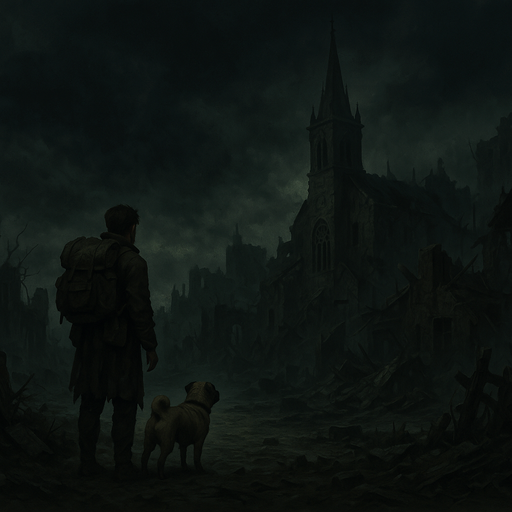

Chapter 4: Baptized
Dark Petals

Dark Petals
15048.11.18
Brown 睜開雙眼，發現此刻的他，又回到了那個熟悉的地下室—服從神社的地下室。然而，這次身邊沒有那些駭人的屍骨坐在一圈又一圈的座椅上，就只有他，獨自躺臥在地上，還有一旁冷冷看著他的 Roger。
Brown 質問 Roger 這到底是怎麼回事？Roger 表示自己只是在盡身為拉索斯教徒該做的事罷了，不要太介意。同時，Roger 也補充道，受洗成為拉索斯教徒的過程可能會很恐懼，也不是每個人都能熬過，希望 Brown 能加油。語畢，他便走上樓梯，離開了地下室。
Brown 努力想站起來，但發現自己手腳都被綑綁住了，漆黑的空間內，有雙發光的眼睛正盯著他，那生物還呢喃著他聽不懂的語言。Brown 感到無助，想努力掙脫，但沒能成功。他發現自己的背包在不遠處，但還是無法伸手觸及。隨著那生物逐漸靠近，他感受到它唸著的，似乎是拉索斯的祝禱文，但是這到底是什麼生物，Brown 還是沒能搞清楚。此刻的他，也許只能等著生物的靠近，再隨機應變了。
隨著那生物靠近，Brown 終於掙脫開手腳的束縛，卻找不到通往樓上的出口。生物緩緩逼近 Brown，Brown 感到一陣頭痛噁心，眼前盡是一片黑。黑暗中，就連他的黑暗視覺都派不上用場。Brown 突然發現自己所處的空間，似乎不在地下室了。什麼地下室？哪裡的地下室？瞬間，Brown 發現自己自從進到魏斯科後的記憶都不見了。慌忙之中，他隨機找了個方向衝去，卻發現怎麼跑都沒有邊界，甚至，頭又開始痛了起來。
Brown 拿起背包內的短劍，插在地上，用繩子綁在劍上，試圖拉著線，探索附近的空間，卻發現在繩子到了盡頭時，還是什麼都沒能觸碰到。Brown 改用自己的短弓，射了一發箭，卻發現不久後那支箭竟然從他自己的後方穿梭了過來。這個空間顯然是個無限循環的空間。Brown 從背包中翻出採摘的黑蓮花花瓣，試圖舔了一下，並沒有任何變化，於是他決定再拿起一片，直接吞了下去。然而，除了感到一陣莫名的恐懼外，沒有任何差異。失望之餘，Brown 坐了下來，短暫的休息。
當 Brown 準備再次探索這個空間時，他聽見了腦中傳來一個人聲，說著他聽不懂的話。Brown 試著溝通，在一陣頭痛後，他發現自己竟然回到了地下室，自己的手，正輕輕放在剛才那頭生物粗糙的毛皮上，而那生物竟溫馴的坐臥著。坐在地上的 Brown，眼前是個高大的人，但是看不清面貌。Brown 試著和那人溝通，而他對著 Brown 說了一句「你醒了」。那聲音像是成千上萬個不同的聲音混雜在一起，共同說著一樣的話。Brown 站起身，眼前的那人穿著著和 Karu 神父一模一樣的裝扮，但他的臉卻是一團糊，完全看不清。
那貌似神父的人向 Brown 說著「你可以走了，但你要記住，今後，你會走上拉索斯之路」。同時，通往樓上的門默默打開了。Brown 朝著那方向走去，一步一步向上爬，在魏斯科的記憶一點一滴的回溯。當 Brown 爬到階梯的頂端，他聽見了階梯下傳來一陣動物的低鳴。Brown 向下一看，剛剛在他身邊的那頭生物正從下方看著他，眼神沒有一絲惡意。「拉茲特獸。」那疑似神父的聲音在 Brown 腦中說了這麼一句。Brown 看了看那頭生物最後一眼，突然有了一種領悟—那生物，也曾經是個人……。接著，他便走離了階梯口。
空蕩蕩的教堂，什麼人都沒有，Queenie、Roger 和 Mr. Muffins 都不在這。外面的天，是亮的。
15048.11.19
Brown 決定離開教堂，前往服務中心，去探望 Queenie。打開門，Queenie 滿臉笑容地迎接賓客，但他的眼神透露了對 Brown 的陌生。Brown 試著解釋前一晚兩人與 Roger 一同去教堂的事，但 Queenie 無法理解，只告訴 Brown 他看起來狀況不太好。說著，Brown 聽見了 Queenie 身後傳出了一陣狗吠聲。
Queenie 從身後抱起了一隻巴哥犬，表示今天一早來上班就看到牠在這裡，而且一直跟著他。巴哥一見到 Brown，便又是舔又是叫，看起來十分親近他。在 Brown 的詢問後，他便讓這隻巴哥跟著他一起離開了。這隻巴哥在 Brown 的眼中很顯然的就是 Mr. Muffins，但他卻完全沒有透過心電感應和 Brown 進行任何的對話。
接著，Brown 又到了凱勒布兄弟當鋪，見到了一樣對他陌生的 Caleb 兄弟，於是他便落寞地離開了。
Brown 走進了酒館，簡單用餐後，便入住了旅店。一天就這樣渾渾噩噩的過去了。
15048.11.20
清醒後，Brown 決定去一趟教堂，但他卻發現教堂的門竟然關上了，一些想進入教堂的民眾發現後也感到十分失落。
Brown 決定離開魏斯科，但在離開前，他再次去服務中心拜訪 Queenie。Queenie 認得這位前一天來訪的客人，熱情地打了聲招呼，但 Brown 心中也很清楚，Queenie 與他過去的回憶，完全不在 Queenie 的腦海中。Brown 和 Queenie 買了張附近的地圖，便和 Mr. Muffins 一起朝著魏斯科的城門外走去。
當 Brown 一腳踏出城門，他的腦中馬上聽見 Mr. Muffins 激動地喊著「快跑！快跑！」同時他也看見踏出城門外的 Mr. Muffins 飛也似地向外奔去，於是 Brown 也追了上去。雖然不知道發生什麼事，但憑著對 Mr. Muffins 的信任，以及一種直覺，Brown 快速地朝著遠處跑去。然而，一股壓抑不住的衝動，要他回頭一樣。
在 Brown 過去的認知中，魏斯科是一座風光明媚，充滿生氣，人潮絡繹不絕的觀光城市，有著豐富的歷史，以及值得期待的未來。
但此刻，在他眼中的，是一座被黑暗籠罩的城市。
毫無生氣，一片廢墟。
難道魏斯科的一切都只是個夢？Brown 伸手向自己的背包內，發現採摘下的花瓣都還在。他知道這不是夢。但他也不知道魏斯科究竟發生了什麼事情。他只知道，要等自己變得更有能力，甚至有更多同伴時，再回來這裡一探究竟。
如果，如果 Queenie 還在—如果 Queenie 曾經真真實實地存在，也許這裡還值得回來。